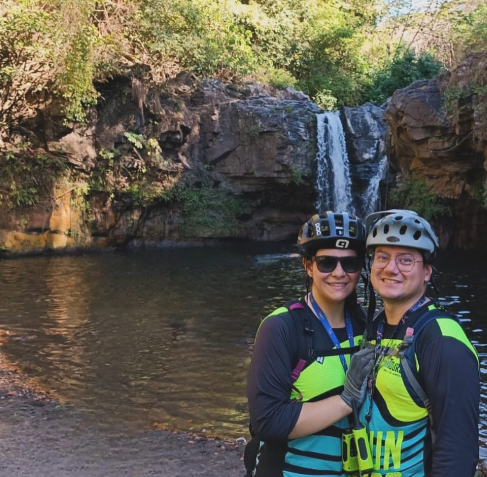

Didier Ovalle | WDD 123
My name is Didier, I am super excited to be learning all the skills necessary to become a programmer. I have a ton of experience with administrative positions. My personal hobbies include hiking, boxing and cycling especially with my partner Rita💕. I love animals, I currently have 5 dogs, a cat, a snake and a turtle.